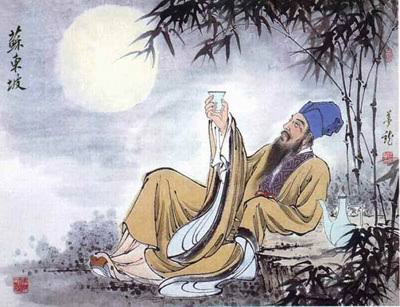

水调歌头 (Shuǐ diào gē tóu) - ทำนองสุ่ยเตี้ยว

ผู้แต่ง: ซูซื่อ / ซูดงโป (苏轼/苏东坡 - Su Shi) | ราชวงศ์: ซ่ง (Song Dynasty)
เนื้อความบทกวี: 人有悲欢离合， (Rén yǒu bēi huān lí hé) 月有阴晴圆缺， (Yuè yǒu yīn qíng yuán quē) 此事古难全。 (Cǐ shì gǔ nán quán) 但愿人长久， (Dàn yuàn rén cháng jiǔ) 千里共婵娟。 (Qiān lǐ gòng chán juān)
ความเป็นมา: บทนี้เป็นกวีนิพนธ์ประเภท "ฉือ" (词 - คำกลอนที่แต่งเข้าทำนองเพลง) ซูดงโปแต่งบทนี้ในคืนวันไหว้พระจันทร์ขณะที่เขาถูกเนรเทศไปรับราชการในเมืองห่างไกล และไม่ได้พบหน้า "ซูเจ๋อ" น้องชายของเขามาเป็นเวลาถึง 7 ปีด้วยเหตุผลทางการเมือง
จุดเด่นทางวรรณศิลป์: ซูดงโปใช้ดวงจันทร์เป็นตัวกลางในการเชื่อมโยงความรู้สึก เขามองความแปรเปลี่ยนของดวงจันทร์ (มืด สว่าง เต็มดวง เว้าแหว่ง) แล้วตกผลึกว่ามันก็เหมือนกับชีวิตมนุษย์ที่มีพบมีพราก ซึ่งเป็นเรื่องธรรมชาติที่ต้องทำใจยอมรับ ประโยคท้าย "千里共婵娟" (ร่วมชมจันทร์งดงามแม้ห่างกันพันลี้) เป็นการปลอบใจตัวเองและส่งความปรารถนาดีไปยังคนที่รัก ถือเป็นวรรคทองที่โรแมนติกและลึกซึ้งที่สุดในประวัติศาสตร์วรรณกรรมจีน